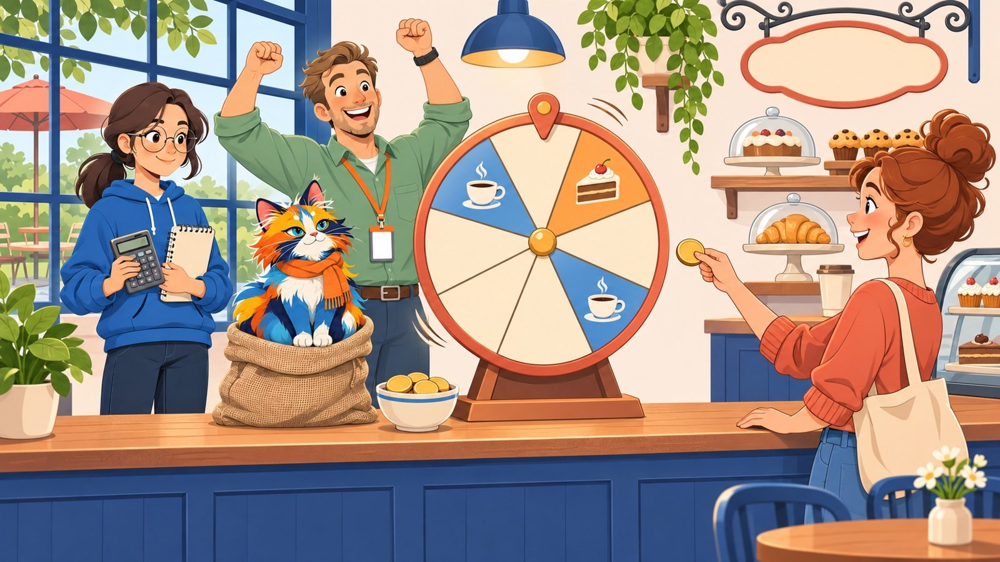
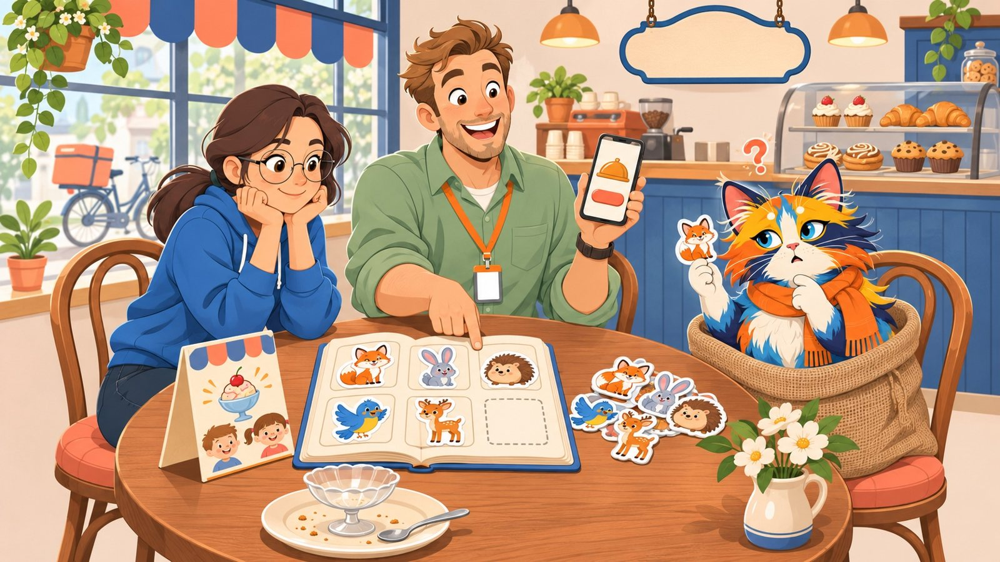
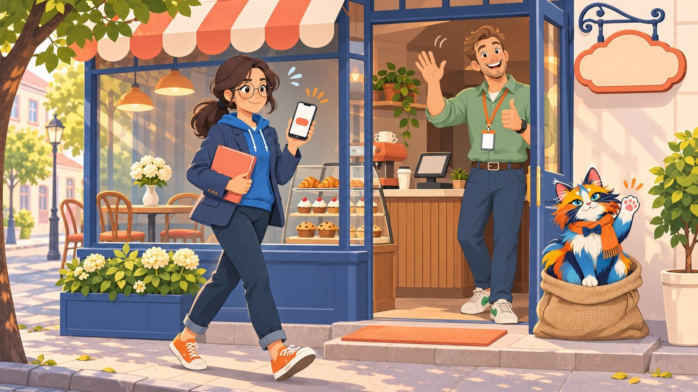

Окупится ли колесо, зависит не от одного вращения, а от того, сколько призов оно раздаёт в среднем. Сравниваем этот средний приз с ценой вращения.
Сначала вспомним
Пересолен 1 круассан из 100. Дегустатор замечает 90% пересоленных и по ошибке бракует 5% нормальных. Он забраковал круассан. Какой шанс, что тот правда пересолен?
Из 1000 круассанов 10 пересолены, дегустатор поймает 9. Из 990 нормальных забракует 5%, это ≈ 50. Среди ≈ 58 забракованных пересолены 9 — примерно 15%. Сначала база, потом сигнал — это было в шаге 6.
Среди всех гостей десерт берут 25%, среди пришедших в дождь — тоже 25%. Что можно сказать про дождь и десерт?
Условие «пришёл в дождь» не меняет долю десертов: P(«десерт» | «дождь») = P(«десерт») = 25%. Это и есть независимость из шага 5.
Шаг 8 из 9
Среднее и разброс
После шага ты сможешь посчитать матожидание и дисперсию и решить, выгодна ли игра в среднем и насколько этот средний результат шатается.

Боб хочет поставить у стойки колесо призов: вращение за 100 ₽, можно выиграть кофе или торт. «Окупится!» — говорит Боб. Алиса задаёт два вопроса: сколько колесо отдаёт в среднем и насколько этот средний результат шатается от гостя к гостю. На первый вопрос отвечает матожидание, на второй — дисперсия.
Кто уйдёт в плюсе?

Боб, продакт
На колесе 8 секторов: 5 пустых, 2 — кофе за 150 ₽, 1 — торт за 400 ₽. Вращение стоит 100 ₽. Гости в восторге, кафе в плюсе!

Котейка
Я куплю сразу 100 жетонов. Кафе в плюсе, а я?

Алиса, аналитик
Смотря как повезёт. Давай угадаем: из 100 гостей с сотней жетонов сколько уйдут с призами дороже, чем заплатили?
«В плюсе» — призы дороже 10 000 ₽, которые гость заплатил за 100 жетонов. Проверим через две карточки.
Крути и смотри на средний приз
Каждое вращение даёт приз: 0, 150 или 400 ₽. Синяя линия — средний приз за вращение по всем твоим вращениям. Куда она прижмётся?
Колесо призов и средний приз за вращение
Пустой сектор — серый, кофе — синий, торт — красный.
Тысяча гостей по сто жетонов
Средний приз прижимается к 87.5 ₽, а платит гость 100 ₽. Кафе в среднем зарабатывает 12.5 ₽ на вращении, за 100 вращений — 1250 ₽ на гостя. А что у каждого гостя? Пусть 1000 гостей купят по 100 жетонов.
Итоги 1000 гостей после 100 вращений, гистограмма
гость в минусегость в плюсе
Облако широкое: призы шатаются сильнее, чем кафе берёт в среднем. Поэтому каждый шестой гость уходит в плюсе, хотя в среднем гости проигрывают. В среднем — не значит каждый раз.
Мяу, я в плюсе! А, нет, это был не я.Средний приз за вращение
История
В штуках
Из 800 вращений ≈ 500 пустых, ≈ 200 с кофе и ≈ 100 с тортом. Призов на 200 · 150 + 100 · 400 = 70 000 ₽, по 70 000/800 = 87.5 ₽ на вращение.
Формула
E[X] = Σ x · P(X = x) = 0 · ⅝ + 150 · ²⁄₈ + 400 · ⅛ = 87.5
Словами: «каждое значение × его доля, и всё сложить». Это центр тяжести столбиков распределения из шага 7.
Приз 87.5 ₽ не выпадает ни разу: такого сектора нет. Среднее — не самое частое и не «типичное» значение, а точка равновесия: где подпереть столбики, чтобы они не перевесили.
Одно полезное следствие: если X — индикатор события A, равный 1, если оно случилось, и 0, если нет, то E[X] = P(A). Средний «выпал ли торт» — это ⅛.
Идея из лекций: Джо Блицштейн, курс Stat 110, Гарвард
Два колеса с одним средним
Котейка предлагает второе колесо: на 4 секторах чай за 75 ₽, на 4 — морс за 100 ₽. Средний приз тот же: (4 · 75 + 4 · 100) / 8 = 87.5 ₽. Но играть на нём совсем не то же самое.
Призы двух колёс; полоса — ± стандартное отклонение
Кружок тем больше, чем чаще приз. Вертикальная черта — среднее, полоса — среднее ± стандартное отклонение.
История
У колеса Боба приз обычно далеко от среднего: то ноль, то торт. У колеса Котейки — всегда рядом. Хотим одно число «насколько далеко от среднего в среднем».
В штуках
Отклонения просто так не усреднить: плюсы и минусы взаимно гасятся, их среднее всегда 0. Поэтому отклонения возводят в квадрат. У колеса Боба из 8 вращений: 5 раз (−87.5)², 2 раза (62.5)², 1 раз (312.5)² — в среднем 17 969. Корень из этого — ≈ 134 ₽. У колеса Котейки отклонения ±12.5, в квадрате 156.25, корень — 12.5 ₽.
Формула
Var X = E[(X − EX)²] = E[X²] − (EX)², SD = √Var X
Словами: «дисперсия — средний квадрат отклонения от среднего, стандартное отклонение — корень из неё, в тех же рублях».
Идея из книги: Владимир Савельев, «Статистика и котики»
Среднее уходит быстрее, чем растёт разброс
Почему после одного вращения в плюсе 3 гостя из 8, а после сотни — только каждый шестой? Двигай число вращений и смотри на облако итогов 1000 гостей.
Облако итогов после n вращений
В штуках
При цене 100 ₽: после 1 вращения в плюсе 37.5% гостей, после 10 — 32.5%, после 100 — 17.0%, после 400 — 3.2%. Центр облака за 100 вращений уходит на −1250 ₽, а ширина растёт только до ≈ 1340 ₽; за 400 — центр −5000 ₽, ширина ≈ 2680 ₽.
Формула
E[X + Y] = EX + EY, Var(X + Y) = Var X + Var Y
Словами: средние складываются всегда; дисперсии складываются, если X и Y независимы. Поэтому у суммы n вращений среднее растёт как n, а SD — как √n: 134 · √100 = 1340.
Складываются дисперсии, а не стандартные отклонения: у суммы 100 вращений SD ≈ 1340 ₽, а не 100 · 134 = 13 400 ₽. Для казино это главный закон: чем дольше игра, тем увереннее выигрыш заведения.
Обратная сторона: SD суммы растёт как √n, а SD среднего падает как 1/√n. С этого начинается «Сигнал или шум», глава 4 «Шум».
Собери все шесть наклеек

В детском меню к каждому обеду — случайная наклейка из шести. Котейка хочет собрать весь альбом. Сколько обедов понадобится в среднем?
123456
Обедов: 0
Сколько обедов нужно до полного альбома: 1000 гостей
| какая по счёту новая | 1 | 2 | 3 | 4 | 5 | 6 |
|---|---|---|---|---|---|---|
| шанс новой | 6/6 | 5/6 | 4/6 | 3/6 | 2/6 | 1/6 |
| обедов в среднем | 1 | 1.2 | 1.5 | 2 | 3 | 6 |
Каждая следующая новая наклейка — геометрическое ожидание из шага 7: при шансе p ждём в среднем 1/p обедов. Складываем ожидания: 1 + 1.2 + 1.5 + 2 + 3 + 6 = 14.7. Последняя наклейка в одиночку стоит 6 обедов — почти столько же, сколько первые четыре вместе.
Идея из книги: Джозеф Блицштейн, Джессика Хван, «Introduction to Probability»
Посчитай альбом формулой и симуляцией
Напиши функцию expected_coupons(n): среднее число обедов, чтобы собрать все n наклеек. Симуляция уже готова — сравни с ней свой ответ.
«Проигрывают все»
Боб, продакт
В среднем гость теряет 12.5 ₽ за вращение. Значит, после 100 вращений каждый гость в минусе на 1250 ₽. Колесо разоряет всех до одного!
Что не так в рассуждении Боба?
−1250 ₽ — центр облака итогов, а не итог каждого. Разброс суммы 100 вращений ≈ 1340 ₽, и примерно 17 гостей из 100 уходят в плюсе. В среднем — не значит каждый раз.
Три задачи и как на них отвечать
Схема ответа одна: переформулируй → посчитай в штуках → запиши формулу → проверь симуляцией → скажи вывод одной фразой.
Бросаем кубик, пока не выпадут все шесть граней. Сколько бросков нужно в среднем?
Переформулирую: это альбом из шести наклеек. Разобью ожидание на шесть кусков: ждём первую новую грань, вторую новую и так далее.
В штуках: первая грань — с первого броска. Вторую новую ловим с шансом 5/6, ждём в среднем 6/5 = 1.2 броска; третью — 6/4 = 1.5; дальше 2, 3 и 6.
Формула: E = 6 · (1 + 1/2 + 1/3 + 1/4 + 1/5 + 1/6) = 14.7. Ожидания складываются всегда, даже если куски зависимы.
Проверка: симуляция в ячейке кода выше даёт около 14.7.
Вывод: в среднем 14.7 броска, и больше половины из них съедают две последние грани.
Бросаем кубик, выигрыш — число очков. Можно один раз перебросить, тогда считается второй бросок. Когда перебрасывать и сколько выигрываем в среднем?
Переформулирую: после переброса нас ждёт в среднем 3.5 очка. Перебрасывать выгодно, если выпало меньше 3.5.
В штуках: из 600 игр в 300 выпадет 4, 5 или 6 — оставляем, в среднем 5 очков. В остальных 300 перебрасываем и получаем в среднем 3.5. Итого (300 · 5 + 300 · 3.5) / 600 = 4.25.
Формула: E = (4 + 5 + 6)/6 + 3/6 · 3.5 = 4.25 против 3.5 без переброса.
Поворот: а с двумя перебросами? Если перебросов осталось два, продолжение стоит 4.25, поэтому оставляем только 5 и 6: E = (5 + 6)/6 + 4/6 · 4.25 ≈ 4.67.
Вывод: перебрасывать 1–3; один переброс даёт 4.25 в среднем, два — 4.67.
Кафе выпустило лотерею: 1000 билетов по 100 ₽, призы — один за 20 000 ₽, десять по 2000 ₽ и сто по 200 ₽. Стоит ли покупать билет?
Переформулирую: сравниваю средний выигрыш на билет с ценой и смотрю на разброс.
В штуках: на 1000 билетов призов на 20 000 + 10 · 2000 + 100 · 200 = 60 000 ₽, то есть по 60 ₽ на билет. Кафе собирает 100 000 ₽ и в среднем оставляет себе по 40 ₽ с билета. 889 билетов из 1000 не выигрывают ничего.
Формула: E[X] = 20 000 · 0.001 + 2000 · 0.01 + 200 · 0.1 = 60 ₽ < 100 ₽; SD ≈ 664 ₽ — разброс в 11 раз больше среднего.
Вывод: в среднем лотерея убыточна для игрока: −40 ₽ на билет. Покупают её не ради среднего, а ради разброса — крошечного шанса на большой приз.
Вопросы про среднее и разброс
Средний приз колеса — 87.5 ₽. Как часто выпадает приз в 87.5 ₽?
Призы бывают только 0, 150 и 400 ₽. Матожидание 87.5 ₽ — точка равновесия столбиков, и само значение может не выпадать никогда. Так и «в среднем 2.3 ребёнка в семье».
Стандартное отклонение одного вращения ≈ 134 ₽. Какое стандартное отклонение у суммы четырёх независимых вращений?
Для независимых вращений Var суммы = 4 · Var одного, значит SD = √4 · 134 = 268 ₽. Разброс растёт как √n, а не как n.
Боб: «E[X + Y] = EX + EY, значит и E[X · Y] = EX · EY». Когда это гарантированно верно?
Линейность E[X + Y] = EX + EY работает для любых величин. А E[X · Y] = EX · EY гарантировано только для независимых. Пример: X = Y = «выпал орёл», 1 или 0, E[X · Y] = ½, а EX · EY = ¼.
У Котейки 5 наклеек из 6. Сколько обедов в среднем ждать последнюю?
Новая наклейка приходит с шансом 1/6, а геометрическое ожидание — 1/p = 6 обедов. Последняя наклейка стоит почти столько же, сколько первые четыре вместе.
В среднем — не значит каждый раз
- Матожидание — «каждое значение × его доля, сложить»: E[X] = Σ x · P(X = x). Колесо: 0 · ⅝ + 150 · ²⁄₈ + 400 · ⅛ = 87.5 ₽ при цене 100 ₽.
- Среднее может не выпадать ни разу и не быть самым частым значением.
- Индикатор события A: E[X] = P(A).
- Дисперсия — средний квадрат отклонения: Var X = E[(X − EX)²] = E[X²] − (EX)²; SD = √Var, в тех же единицах.
- E[X + Y] = EX + EY — всегда. Var(X + Y) = Var X + Var Y и E[X · Y] = EX · EY — для независимых.
- У суммы n независимых вращений среднее растёт как n, SD — как √n: долгая игра работает на заведение.
- Купоны: собрать n наклеек — в среднем n · (1 + 1/2 + … + 1/n); для 6 — 14.7, последние самые дорогие.
- Матожидание
- среднее значение величины при долгом повторении; expected value, E[X]
- Дисперсия
- средний квадрат отклонения от среднего; variance, Var X
- Стандартное отклонение
- корень из дисперсии; standard deviation, SD, σ
- Линейность
- E[X + Y] = EX + EY без всяких условий; linearity of expectation
- Задача о купонах
- сколько ждать полный набор; coupon collector
